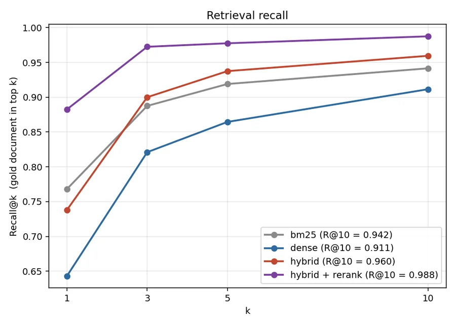
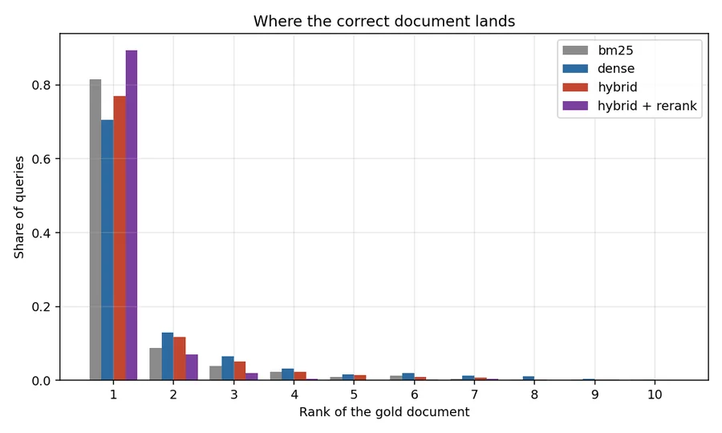

Retrieval · RAG · evaluation
Semantic Search & RAG
A from-scratch keyword index beat the neural retriever on every metric, and ran 9× faster.

Most RAG projects show three cherry-picked queries and declare success. This one runs on a corpus where every question has a labelled correct document, so retrieval quality is a number rather than an impression.
That measurement immediately produced a result worth reporting: the embedding model loses.
BM25 beat the embedding model, decisively
| System | Recall@1 | Recall@10 | MRR | Miss rate | ms/query |
|---|---|---|---|---|---|
| BM25 (lexical) | 0.768 | 0.942 | 0.832 | 5.9% | 1.3 |
| Dense (MiniLM) | 0.643 | 0.912 | 0.739 | 8.9% | 12.0 |
| Hybrid (RRF) | 0.738 | 0.960 | 0.823 | 4.1% | 10.0 |
all-MiniLM-L6-v2 lost on every metric and was 9× slower. This is not a bug and it is not unusual: SQuAD questions are written by annotators looking at the paragraph, so they reuse its vocabulary — precisely the condition under which exact lexical matching excels.
The wider point: a dense retriever is not automatically an upgrade. Without a labelled set you cannot know which way it goes on your corpus, and the default assumption that embeddings beat keyword search is how teams ship a slower, worse, more expensive system and never find out.

Hybrid fusion wins where RAG actually cares
Hybrid loses to BM25 at Recall@1 (0.738 vs 0.768) but wins everywhere past rank 1 — and cuts the miss rate from 5.9% to 4.1%, a 30% reduction in questions where the answer was never retrieved at all.
For RAG that trade is clearly right. The generator is handed the top k passages, not just the first one, so what matters is whether the answer is in the context window at all. A document the generator never sees cannot be used, however well-ranked the alternatives were.
Fusion uses Reciprocal Rank Fusion, which discards the scores and fuses ranks. BM25 returns an unbounded sum of IDF terms; cosine similarity lives in [−1, 1]. Any attempt to normalise them onto a shared scale needs assumptions about their distributions that do not hold query to query. RRF sidesteps that entirely — and a document ranked well by both retrievers outranks one ranked first by only one.

Reranking is the biggest win and by far the most expensive
A cross-encoder pass lifted Recall@1 from 0.755 to 0.883 (+12.8pp) and MRR by 0.084. Nothing else in this project moved the numbers that much.
It costs 175× the latency — 1,744 ms per query against 10 ms, on CPU. The reason it works is the reason it is slow: a bi-encoder embeds query and passage independently and can never model their interaction, while a cross-encoder reads both together. That is also why it only runs over a 20-document shortlist; over 3,099 passages it would be unusable.
The engineering conclusion is a two-stage architecture: cheap retrieval for recall, expensive reranking for precision, applied only to the shortlist. On a GPU that 1.7 s collapses — but the shape of the trade does not change.
Retrieval succeeding is not the same as answering correctly
From the worked examples the pipeline emits:
Q: What colour were the Broncos' uniforms in Super Bowl 50?
Retrieved: correct paragraph, rank 1 ✅
Extractive answer: "In their only other Super Bowl win in Super Bowl XXXII, Denver wore blue jerseys…"
Gold answer: "white" ❌
Retrieval did its job perfectly. The extractive reader then picked the wrong sentence — one that is about jersey colour, shares more vocabulary with the question than the correct sentence does, and answers a different Super Bowl.
This is exactly why the retrieval metrics are reported separately from answering. Conflating them hides which half is broken.
A cold start that a readiness probe would have missed
The first search after boot took 42 seconds — the encoder loading lazily while the client waited. /health had already reported the service live, so a readiness probe would have routed traffic straight into it.
One throwaway encode at start-up moves that cost where it belongs. First query: 96 ms.
Two other decisions worth stating. BM25 is written from scratch rather than imported, so the ranking stays auditable and the repo carries no extra dependency for its strongest retriever. And dense search is an exact matrix multiply: at 3,099 passages, embeddings @ query is faster than an ANN index and returns exact results. An approximate structure only starts paying for itself in the millions — building one here would be cargo-culted complexity.
What this does not support
- SQuAD flatters lexical retrieval. On a corpus where users phrase questions in their own words — support tickets, internal wikis — the dense retriever would very likely close the gap or win. The headline finding is about this corpus, not about embeddings in general. The transferable part is the harness that produced it.
- One relevant document per query. Real search has graded, multi-document relevance; nDCG is doing less work here than its name suggests.
- The embedding model is a small general-purpose one, chosen so the pipeline runs on CPU. A larger or domain-tuned encoder would score better.
- No query rewriting, HyDE or multi-hop retrieval — every question here is answerable from a single paragraph, so those would have nothing to demonstrate.
- Latency was measured on a contended 4-core CPU and is indicative, not a benchmark.
- Answer quality is not scored. Retrieval is measured against ground truth; the answering layer is illustrated but not evaluated.